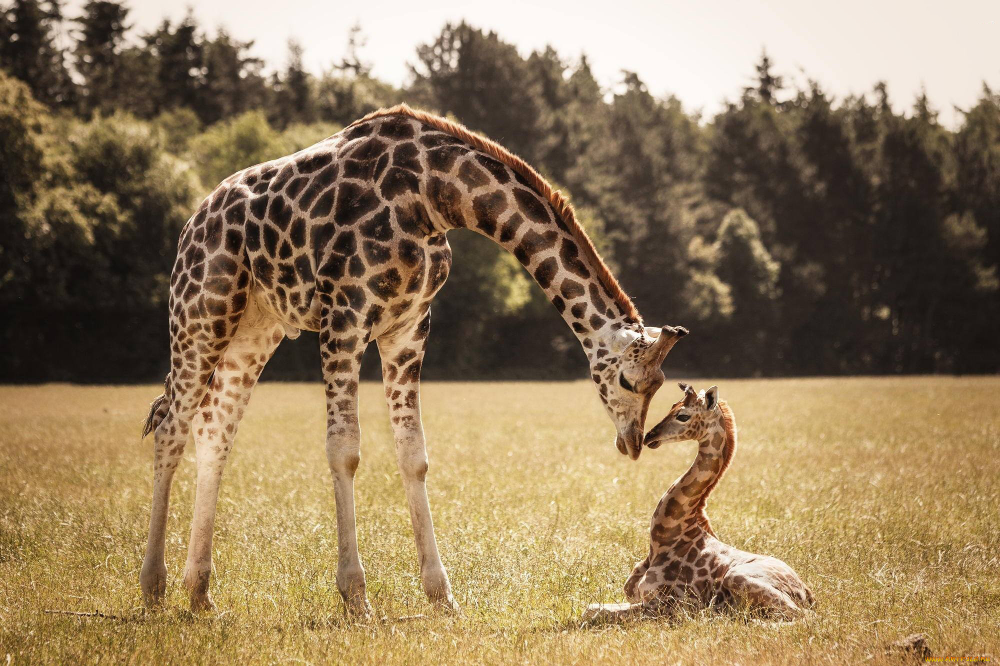
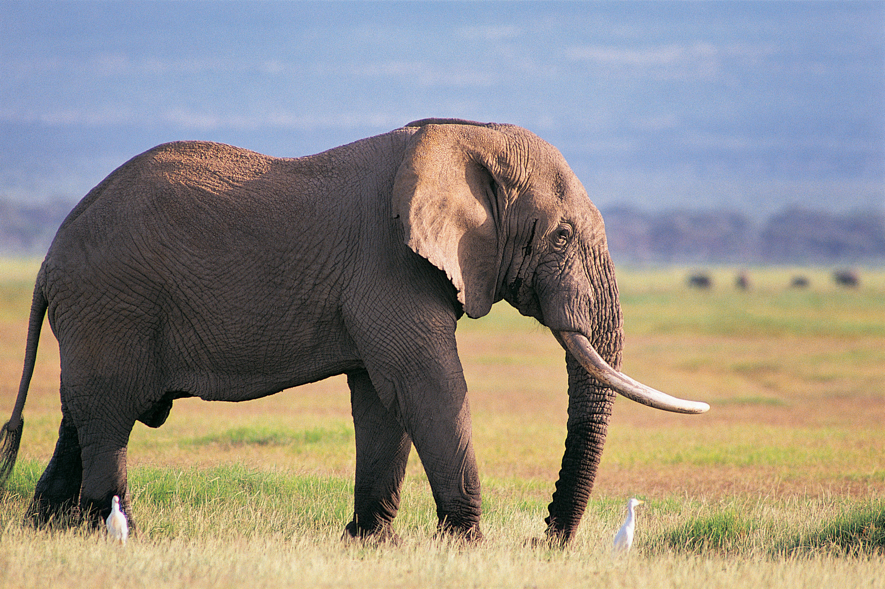
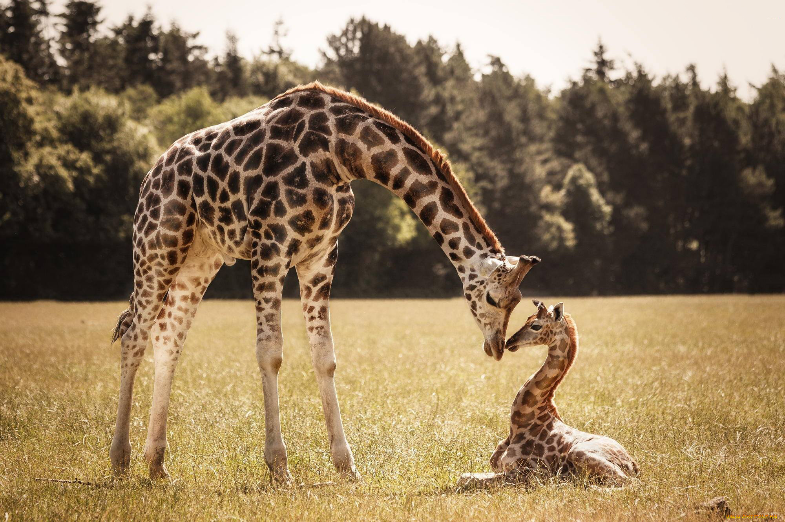
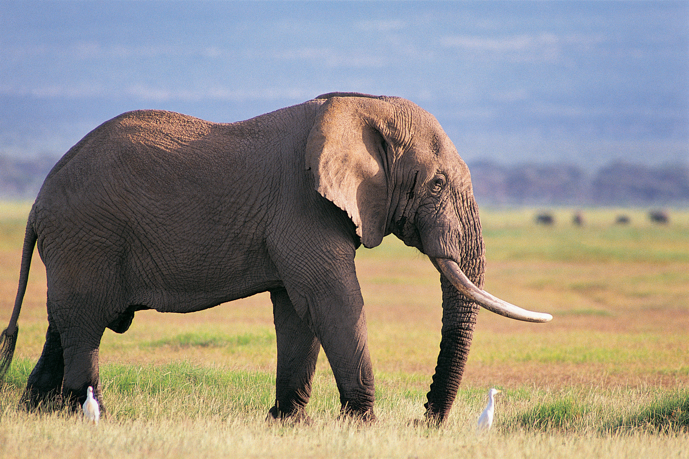

Сафaри (суахили safari — путешествие) — первоначально охотничьи поездки по Восточной Африке. Позже понятие сафари стало применяться и в других частях Африки и мира, а его значение существенно изменилось. Сегодня слово «сафари» чаще означает вполне мирные и сравнительно недорогие экскурсии в дикую природу, на которых фотографируют зверей. В некоторых странах развилась целая индустрия сафари с опытными сопровождающими.
Африканское сафари уже не одно столетие привлекает искателей приключений и простых туристов. Личная встреча с представителями дикой природы никого не оставит равнодушным и подарит массу ярких эмоций и впечатлений. Сегодня это просто экзотическое приключение, которое доступно абсолютно каждому. Но, в далеком 19 веке участие в сафари было символом мужества и храбрости - это была настоящая охота на диких зверей. Охотники с удовольствием собирали свои трофеи и развешивали на стенах своих кабинетов. Сэр Ричард Фрэнсис Бертон стал первым человеком, который назвал охоту на диких животных в естественной среде обитания сафари.
Носорог, слон, буйвол, лев и леопард – привлекают внимание всех людей мира. Не многим удаётся увидеть этих величественных животных вживую, в основном только в зоопарке или на картинках. Сафари даёт возможность приблизиться к «большой пятерке» и тщательно их рассмотреть. Стоит отметить, что и другие животные Африки достойны пристального внимания, они особенно прекрасны в своей естественной среде обитания. С помощью сафари можно ближе познакомиться с африканской фауной.
Без ложной скромности можно сказать, что весь африканский материк прекрасное место для сафари и отдыха. Однако существуют специальные заповедники, где животные чувствуют себя вольготно и встреча с ними безопасна для людей. Например, в Танзании есть Национальный парк Серенгети. На его территории обитает большое количеств зебр и антилоп гну. Они постоянно находятся в движении. При появлении потомства старшее поколение «оседает» на одном месте до тех пор, пока телята не встанут на ноги. После они вновь продолжают кочевать от места к месту.
Для любителей приключений существует несколько видов африканского сафари. По желанию, можно увидеть место обитания животных и их самих на специальном автобусе, который вмещает в себя порядка восьми человек. Есть вариант объехать владения на внедорожнике или верхом на лошади. Возможно, пройтись пешком в сопровождении вооруженного проводника.